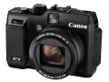

器材库 > 不可换镜头数码相机 > PowerShot G1 X

规格总览
发布日期
2012-01-10
影像规格
影像传感器
CMOS
影像传感器尺寸
18.7X14.0
有效像素
1430万
静态图像尺寸
4:3 - (L & RAW) 4352 x 3264, (M1) 3072 x 2304, (M2) 1600 x 1200, (S) 640 x 480
静态图像格式
JPEG, RAW
画幅比
3:2, 4:3, 16:9, 1:1, 5:4
短片尺寸
1920x1080分辨率1920 x 1080 @24FPS
短片格式
MPEG4-AVC/H.264
镜头和对焦
镜头结构
11片/10组
非球面镜片
2片
焦距
15.1mm-60.4mm
等效35mm画幅焦距
28mm-112mm
最大光圈
f/2.8-5.8
光学变焦
4倍
数码变焦
4倍
自动对焦系统
9点
曝光控制
测光模式
中央重点测光, 评价测光, 点测光
快门速度
1 ～ 1/4000
曝光补偿
±2EV以1/3EV级调整
自拍
10秒, 2秒
取景规格
取景器
光学取景器
LCD类型
TFT LCD
LCD尺寸
3.0英寸
LCD像素
92万
LCD特性
翻转屏
文件输入/输出
存储卡
SD/SDHC, SDXC
数据接口
USB2.0
视频/音频接口
HDMI 输出
电源
电池
NB-10L锂离子电池
外观
颜色
黑色
尺寸
116.7 x 80.5 x 64.7mm
重量
534g
hawkeye20142014-09-16 16:232.13 分
操作性 4.00功能性 3.00美观性 1.00趣味性 1.50耐用性 3.00性价比 0.50解像力 3.00色彩还原 1.00
chibang2014-02-06 18:054.81 分
操作性 5.00功能性 5.00美观性 4.50趣味性 4.50耐用性 5.00性价比 4.50解像力 5.00色彩还原 5.00
摄影兄弟2013-12-27 16:564.56 分
操作性 4.50功能性 4.50美观性 5.00趣味性 4.00耐用性 4.00性价比 4.50解像力 5.00色彩还原 5.00
rexgreen2013-02-15 13:393.75 分
操作性 3.00功能性 3.50美观性 3.50趣味性 3.00耐用性 4.00性价比 4.00解像力 4.50色彩还原 4.50
okj2013-01-12 14:593.88 分
操作性 3.00功能性 3.00美观性 5.00趣味性 3.00耐用性 5.00性价比 3.00解像力 4.50色彩还原 4.50
水柔2012-12-08 16:204.06 分
操作性 4.50功能性 4.50美观性 4.00趣味性 4.00耐用性 4.00性价比 3.50解像力 4.00色彩还原 4.00
刷卡太快请重刷2012-11-19 14:574.06 分
操作性 3.50功能性 4.00美观性 4.00趣味性 4.00耐用性 4.50性价比 3.50解像力 4.50色彩还原 4.50
duxingyiren2012-07-25 20:484.13 分
操作性 4.00功能性 4.00美观性 4.50趣味性 4.50耐用性 4.00性价比 4.00解像力 4.00色彩还原 4.00
双休2012-05-09 10:164.25 分
操作性 4.00功能性 4.50美观性 5.00趣味性 4.50耐用性 4.00性价比 3.00解像力 4.50色彩还原 4.50
散淡闲云2012-04-01 22:153.94 分
操作性 4.00功能性 3.50美观性 4.00趣味性 4.00耐用性 4.00性价比 3.00解像力 4.50色彩还原 4.50
leicageek2012-03-05 21:292.69 分
操作性 1.00功能性 2.50美观性 3.50趣味性 1.50耐用性 3.00性价比 0.50解像力 5.00色彩还原 4.50
UVfilter2012-03-04 17:544.63 分
操作性 4.00功能性 5.00美观性 5.00趣味性 5.00耐用性 5.00性价比 4.00解像力 4.50色彩还原 4.50
尤龙摄影2012-02-17 14:032.88 分
操作性 3.00功能性 3.00美观性 1.00趣味性 3.50耐用性 3.50性价比 1.00解像力 4.00色彩还原 4.00
sharopova2012-02-16 15:313.75 分
操作性 4.00功能性 4.00美观性 4.00趣味性 4.00耐用性 4.00性价比 2.00解像力 4.00色彩还原 4.00
2011精灵2012-02-15 14:584.25 分
操作性 4.50功能性 4.50美观性 4.00趣味性 4.00耐用性 4.00性价比 4.00解像力 4.50色彩还原 4.50
Z号巡洋舰2012-01-30 20:224.69 分
操作性 4.50功能性 4.50美观性 4.50趣味性 4.50耐用性 4.50性价比 5.00解像力 5.00色彩还原 5.00
2011精灵2012-01-16 00:09
托拉基斯基2012-01-14 02:363.94 分
操作性 4.50功能性 5.00美观性 1.00趣味性 4.00耐用性 4.00性价比 4.50解像力 4.50色彩还原 4.00
stweeg2012-01-11 18:41
锦衣怒马2012-01-10 17:01
产品图 / 样片
评测 / 相关文章
- 详细内容 （存档）
- 向单反叫板！佳能G1 X评测 （存档）
- ［资讯］与佳能感动典藏一起记录你的精彩旅途 （存档）
- ［资讯］传佳能年内将推出新的大底数码相机 （存档）
- ［试用］G1 X眼中的精灵们 （存档）
- ［资讯］LensTip公布佳能G1 X测试样片 （存档）
- ［试用］佳能PowerShot G1X 感光度测试 （存档）
- ［资讯］大尺寸CMOS 佳能G1 X样片赏析 （存档）
- ［资讯］PMA@CES 2012佳能展台一览 （存档）
- ［资讯］佳能PowerShot G1 X真机图赏 （存档）